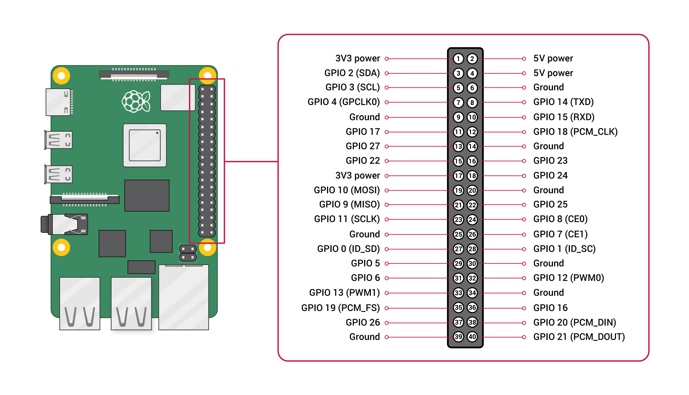
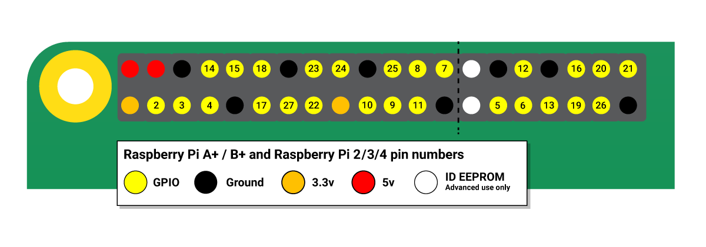
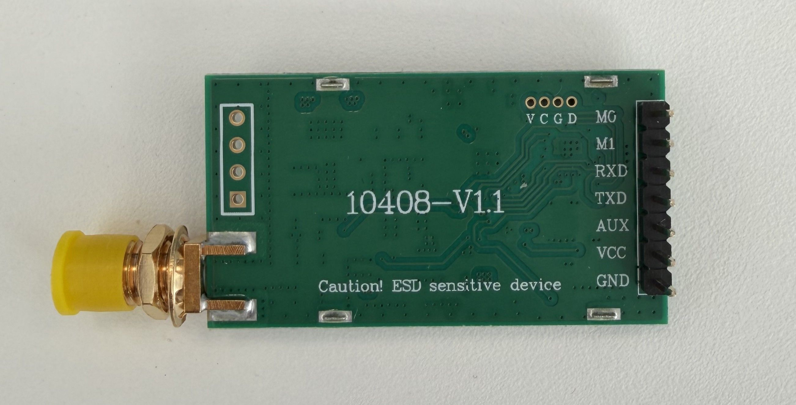
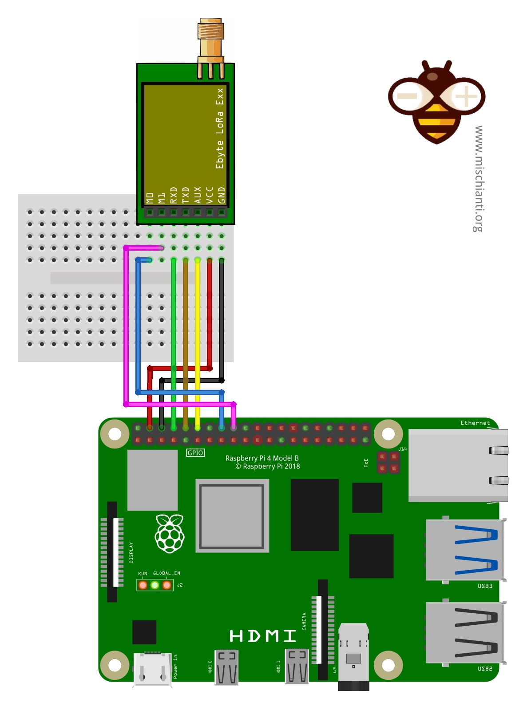
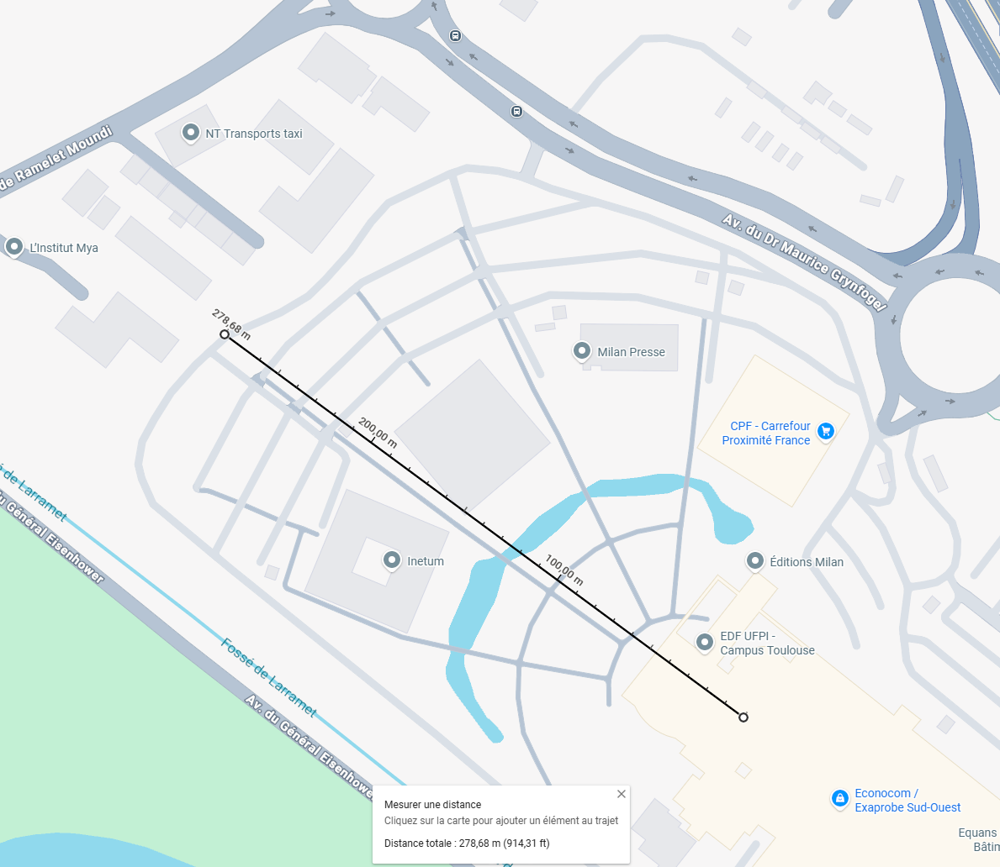
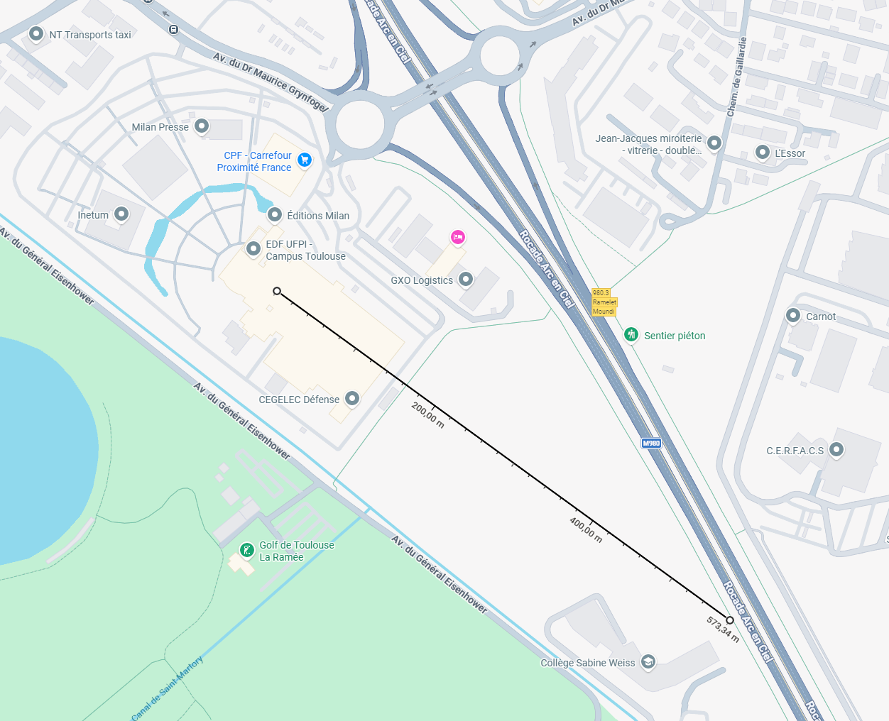
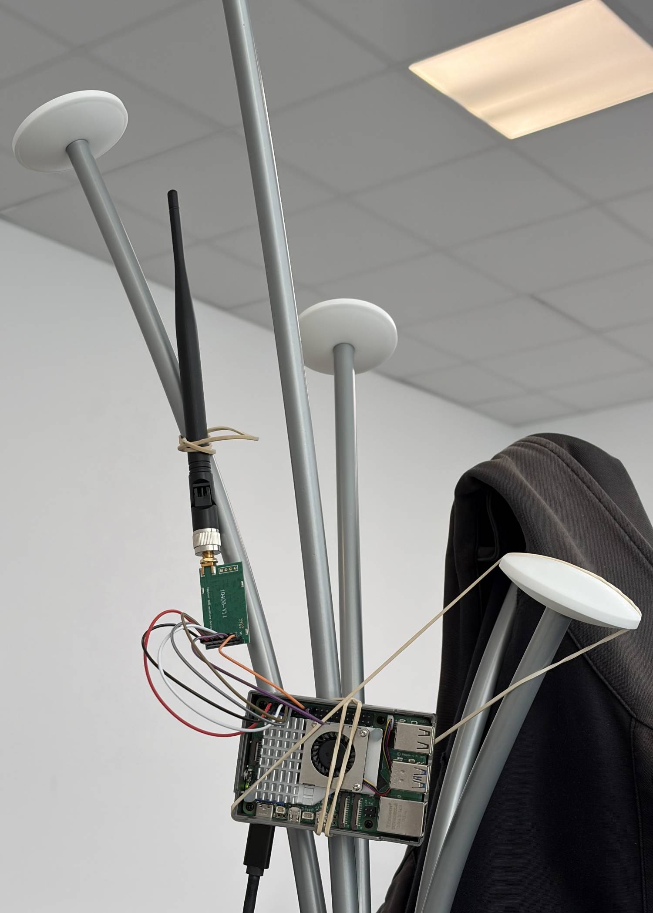
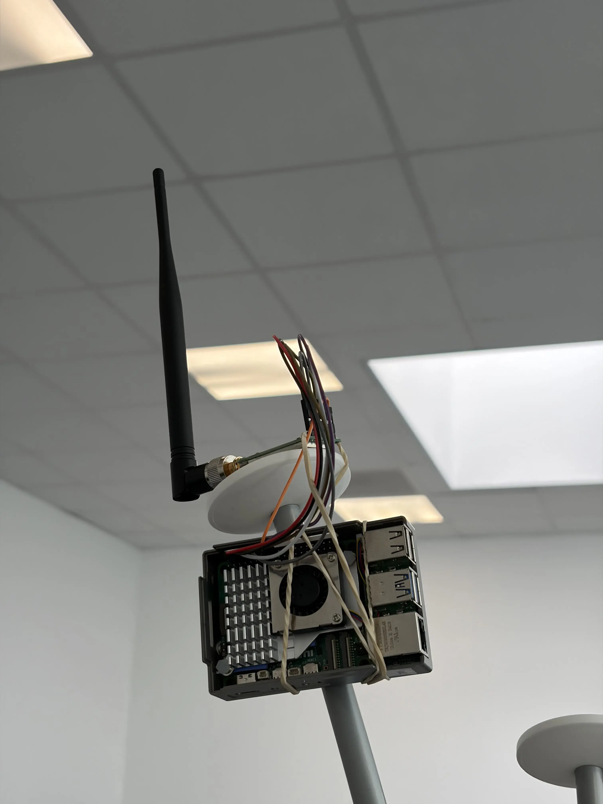
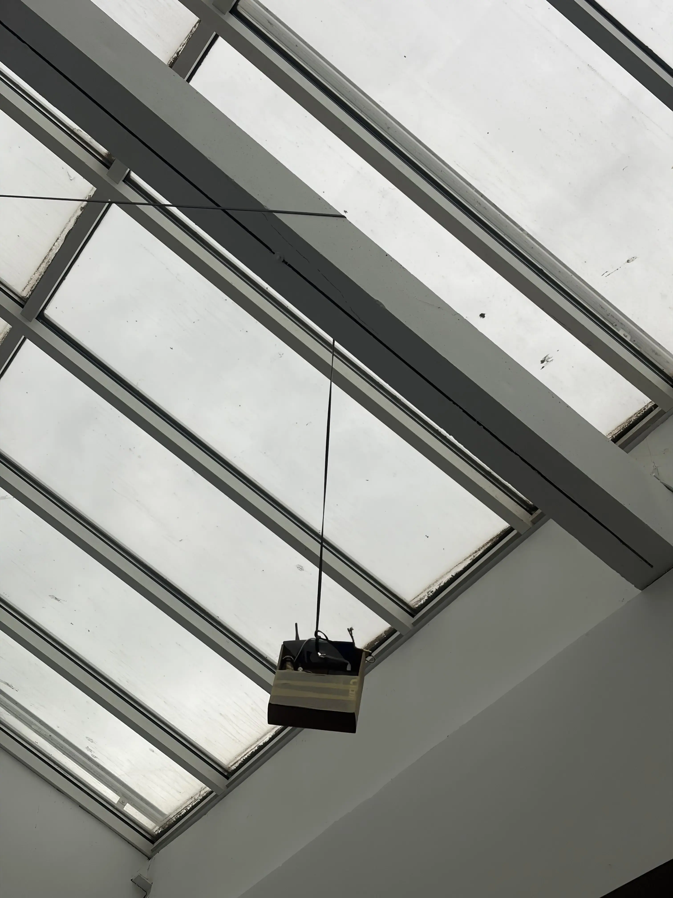

LoRa between Raspberry Pi 5 and Raspberry Pi 5¶
Goal: send messages between 2 Raspberry Pi 5 using LoRa.
Step 1: Connect LoRa Module¶
I use E220-400T30D module from Ebyte and I have a Raspberry Pi 5. In order to connect the LoRa module to the Raspi I have to use the 40-pin GPIO (General Purpose Input Output).


And connect it the E220-400T30D LoRa module

Follow the following schema using Dupont cable to connect pins

To summarize
| LoRa Module Pins | Raspberry Pi 5 pins |
|---|---|
| M0 | Pin 16 (GPIO 23) |
| M1 | Pin 18 (GPIO 24) |
| RXD | Pin 8 (GPIO 14 TDX) |
| TDX | Pin 10 (GPIO 15 RDX) |
| AUX | Pin 12 (GPIO 18 PXM_CLK) |
| VCC | Pin 4 (5V) |
| GND | Pin 6 (Ground) |
Warning
RDX on LoRa module is connected to TDX on Raspberry, this is normal. And vice-versa for TDX.
Info
I test the voltage between Vcc and ground of the LoRa module and it's 5V
Step 2: Configure Raspi¶
-
Connect to the raspi over ssh for example the run
-
Navigate to Interface Options:
Use your arrow keys to select
3 Interface Optionsand press Enter. -
Select Serial Port:
Find
I6 Serial Portand press Enter. -
Answer "No" to the Login Shell:
The tool will ask: "Would you like a login shell to be accessible over serial?" Select
<No>. -
Answer "Yes" to Enable Hardware:
The tool will then ask: "Would you like the serial port hardware to be enabled?" Select
<Yes>. Why? This ensures the GPIO pins (8 and 10) are actually powered and assigned to the UART controller. -
Finish and Reboot:
Select
<Finish>on the main menu.
Select<Yes>when it asks if you would like to reboot now. -
Install dependencies
Step 3: Configure LoRa Module¶
Note
The scripts and systemd services used in this experiment are no longer maintained and have been removed from the repository. They are still available in the git history: code/ and services/.
Install uv once on each raspi
Install dependencies, go in the code folder
In order to get RSSI and to set the same parameter such as UART rate (baud rate) and air date rate you have to flash to send a command to write the LoRa E220 module register.
To perform that, run on both receiver and sender:
Step 4: Run the code¶
Go in the code folder.
Then run send.py on one raspi and receive.py, one the other one.
Then you should see on the receiver side:
❯ uv run receive.py
--- Pi 5 LoRa Receiver Operational (RSSI Enabled) ---
[14:19:55] Message: Pi5 LoRa Message #1 | Signal: -9 dBm
[14:20:00] Message: Pi5 LoRa Message #2 | Signal: -10 dBm
[14:20:06] Message: Pi5 LoRa Message #3 | Signal: -10 dBm
^C
Stopping script...
Success
Congratulation you have set up a LoRa connection between 2 Raspi.
Step 5: Automate the script run at boot¶
Copy lora-receiver.service (or lora-sender.service) into /etc/systemd/system/
Then run load the new configuration with
And restart the service
or
And to make it automatically start as boot:
or
You can now check log thanks to
or
Debug¶
If message are not received make sure that both LoRa module have same configuration by executing read_lora_register.py.
Go in the code folder.
Test range 1¶
In order to test range I put the receiver in the Neusta office and I walk out to see how far it carries.
Here is the config:
Show config
Switching to Configuration mode (M0=1, M1=1)...
Sending read command: C10008
Raw response received: C100080000622012800000
----------------------------------------
CURRENT MODULE CONFIGURATION
----------------------------------------
Module Address : 0x0000 (0)
Frequency (Channel) : 428.125 MHz (Channel 18)
UART Speed : 9600 bps
Serial Parity : 8N1
Air Speed (LoRa) : 2.4k bps
Packet Size : 200 bytes
TX Power : 30dBm
Transmission Mode : Transparent
Ambient RSSI (LBT) : Enabled
RSSI at end of msg : Enabled
LBT (Listen Before) : Disabled
WOR Cycle : 500ms
----------------------------------------
Resetting pins to Normal mode (M0=0, M1=0)...
Resources released.
Here are the logs:
Show logs
[10:35:54] Message: Pi5 LoRa Message #1 | Signal: -256 dBm
[10:35:59] Message: Pi5 LoRa Message #2 | Signal: -10 dBm
[10:36:04] Message: Pi5 LoRa Message #3 | Signal: -256 dBm
[10:36:10] Message: Pi5 LoRa Message #4 | Signal: -256 dBm
[10:36:15] Message: Pi5 LoRa Message #5 | Signal: -256 dBm
[10:36:20] Message: Pi5 LoRa Message #6 | Signal: -256 dBm
[10:36:26] Message: Pi5 LoRa Message #7 | Signal: -256 dBm
[10:36:31] Message: Pi5 LoRa Message #8 | Signal: -256 dBm
[10:36:37] Message: Pi5 LoRa Message #9 | Signal: -256 dBm
[10:36:42] Message: Pi5 LoRa Message #10 | Signal: -27 dBm
[10:36:47] Message: Pi5 LoRa Message #11 | Signal: -9 dBm
[10:36:53] Message: Pi5 LoRa Message #12 | Signal: -6 dBm
[10:36:58] Message: Pi5 LoRa Message #13 | Signal: -8 dBm
[10:37:03] Message: Pi5 LoRa Message #14 | Signal: -11 dBm
[10:37:09] Message: Pi5 LoRa Message #15 | Signal: -1 dBm
[10:37:14] Message: Pi5 LoRa Message #16 | Signal: -256 dBm
[10:37:19] Message: Pi5 LoRa Message #17 | Signal: -8 dBm
[10:37:25] Message: Pi5 LoRa Message #18 | Signal: -21 dBm
[10:37:30] Message: Pi5 LoRa Message #19 | Signal: -34 dBm
[10:37:35] Message: Pi5 LoRa Message #20 | Signal: -42 dBm
[10:37:41] Message: Pi5 LoRa Message #21 | Signal: -43 dBm
[10:37:46] Message: Pi5 LoRa Message #22 | Signal: -32 dBm
[10:37:52] Message: Pi5 LoRa Message #23 | Signal: -34 dBm
[10:37:57] Message: Pi5 LoRa Message #24 | Signal: -30 dBm
[10:38:02] Message: Pi5 LoRa Message #25 | Signal: -30 dBm
[10:38:08] Message: Pi5 LoRa Message #26 | Signal: -34 dBm
[10:38:13] Message: Pi5 LoRa Message #27 | Signal: -31 dBm
[10:38:18] Message: Pi5 LoRa Message #28 | Signal: -38 dBm
[10:38:24] Message: Pi5 LoRa Message #29 | Signal: -49 dBm
[10:38:29] Message: Pi5 LoRa Message #30 | Signal: -41 dBm
[10:38:34] Message: Pi5 LoRa Message #31 | Signal: -44 dBm
[10:38:40] Message: Pi5 LoRa Message #32 | Signal: -41 dBm
[10:38:45] Message: Pi5 LoRa Message #33 | Signal: -55 dBm
[10:38:50] Message: Pi5 LoRa Message #34 | Signal: -59 dBm
[10:38:56] Message: Pi5 LoRa Message #35 | Signal: -71 dBm
[10:39:01] Message: Pi5 LoRa Message #36 | Signal: -42 dBm
[10:39:06] Message: Pi5 LoRa Message #37 | Signal: -45 dBm
[10:39:12] Message: Pi5 LoRa Message #38 | Signal: -38 dBm
[10:39:17] Message: Pi5 LoRa Message #39 | Signal: -36 dBm
[10:39:23] Message: Pi5 LoRa Message #40 | Signal: -38 dBm
[10:39:28] Message: Pi5 LoRa Message #41 | Signal: -36 dBm
[10:39:33] Message: Pi5 LoRa Message #42 | Signal: -47 dBm
[10:39:39] Message: Pi5 LoRa Message #43 | Signal: -37 dBm
[10:39:44] Message: Pi5 LoRa Message #44 | Signal: -32 dBm
[10:39:49] Message: Pi5 LoRa Message #45 | Signal: -38 dBm
[10:39:55] Message: Pi5 LoRa Message #46 | Signal: -52 dBm
[10:40:00] Message: Pi5 LoRa Message #47 | Signal: -42 dBm
[10:40:05] Message: Pi5 LoRa Message #48 | Signal: -45 dBm
[10:40:11] Message: Pi5 LoRa Message #49 | Signal: -59 dBm
[10:40:16] Message: Pi5 LoRa Message #50 | Signal: -56 dBm
[10:40:21] Message: Pi5 LoRa Message #51 | Signal: -53 dBm
[10:40:32] Message: Pi5 LoRa Message #53 | Signal: -54 dBm
[10:40:38] Message: Pi5 LoRa Message #54 | Signal: -57 dBm
[10:40:43] Message: Pi5 LoRa Message #55 | Signal: -53 dBm
[10:40:48] Message: Pi5 LoRa Message #56 | Signal: -52 dBm
[10:40:54] Message: Pi5 LoRa Message #57 | Signal: -59 dBm
[10:40:59] Message: Pi5 LoRa Message #58 | Signal: -55 dBm
[10:41:04] Message: Pi5 LoRa Message #59 | Signal: -61 dBm
[10:41:10] Message: Pi5 LoRa Message #60 | Signal: -52 dBm
[10:41:20] Message: Pi5 LoRa Message #62 | Signal: -46 dBm
[10:41:26] Message: Pi5 LoRa Message #63 | Signal: -54 dBm
[10:41:31] Message: Pi5 LoRa Message #64 | Signal: -53 dBm
[10:41:58] Message: Pi5 LoRa Message #69 | Signal: -52 dBm
[10:42:03] Message: Pi5 LoRa Message #70 | Signal: -59 dBm
[10:42:09] Message: Pi5 LoRa Message #71 | Signal: -58 dBm
[10:42:14] Message: Pi5 LoRa Message #72 | Signal: -57 dBm
[10:42:19] Message: Pi5 LoRa Message #73 | Signal: -63 dBm
[10:42:30] Message: Pi5 LoRa Message #75 | Signal: -64 dBm
[10:42:35] Message: Pi5 LoRa Message #76 | Signal: -64 dBm
[10:42:41] Message: Pi5 LoRa Message #77 | Signal: -63 dBm
[10:42:46] Message: Pi5 LoRa Message #78 | Signal: -57 dBm
[10:43:02] Message: Pi5 LoRa Message #81 | Signal: -59 dBm
[10:43:08] Message: Pi5 LoRa Message #82 | Signal: -60 dBm
[10:43:13] Message: Pi5 LoRa Message #83 | Signal: -69 dBm
[10:43:18] Message: Pi5 LoRa Message #84 | Signal: -68 dBm
[10:43:24] Message: Pi5 LoRa Message #85 | Signal: -71 dBm
[10:43:29] Message: Pi5 LoRa Message #86 | Signal: -61 dBm
[10:43:40] Message: Pi5 LoRa Message #88 | Signal: -60 dBm
[10:43:45] Message: Pi5 LoRa Message #89 | Signal: -58 dBm
[10:43:50] Message: Pi5 LoRa Message #90 | Signal: -68 dBm
[10:43:56] Message: Pi5 LoRa Message #91 | Signal: -71 dBm
[10:44:01] Message: Pi5 LoRa Message #92 | Signal: -60 dBm
[10:44:06] Message: Pi5 LoRa Message #93 | Signal: -63 dBm
[10:44:12] Message: Pi5 LoRa Message #94 | Signal: -60 dBm
[10:44:22] Message: Pi5 LoRa Message #96 | Signal: -68 dBm
[10:44:33] Message: Pi5 LoRa Message #98 | Signal: -67 dBm
[10:44:44] Message: Pi5 LoRa Message #100 | Signal: -55 dBm
[10:45:00] Message: Pi5 LoRa Message #103 | Signal: -58 dBm
[10:45:05] Message: Pi5 LoRa Message #104 | Signal: -61 dBm
[10:45:32] Message: Pi5 LoRa Message #109 | Signal: -64 dBm
[10:45:38] Message: Pi5 LoRa Message #110 | Signal: -63 dBm
[10:45:48] Message: Pi5 LoRa Message #112 | Signal: -63 dBm
[10:45:54] Message: Pi5 LoRa Message #113 | Signal: -64 dBm
[10:45:59] Message: Pi5 LoRa Message #114 | Signal: -64 dBm
[10:46:04] Message: Pi5 LoRa Message #115 | Signal: -61 dBm
[10:46:15] Message: Pi5 LoRa Message #117 | Signal: -64 dBm
[10:46:20] Message: Pi5 LoRa Message #118 | Signal: -65 dBm
[10:46:26] Message: Pi5 LoRa Message #119 | Signal: -63 dBm
[10:46:31] Message: Pi5 LoRa Message #120 | Signal: -63 dBm
[10:46:37] Message: Pi5 LoRa Message #121 | Signal: -57 dBm
[10:46:42] Message: Pi5 LoRa Message #122 | Signal: -62 dBm
[10:46:47] Message: Pi5 LoRa Message #123 | Signal: -64 dBm
[10:46:53] Message: Pi5 LoRa Message #124 | Signal: -59 dBm
[10:46:58] Message: Pi5 LoRa Message #125 | Signal: -63 dBm
[10:47:03] Message: Pi5 LoRa Message #126 | Signal: -59 dBm
[10:47:09] Message: Pi5 LoRa Message #127 | Signal: -60 dBm
[10:47:14] Message: Pi5 LoRa Message #128 | Signal: -64 dBm
[10:47:19] Message: Pi5 LoRa Message #129 | Signal: -65 dBm
[10:47:25] Message: Pi5 LoRa Message #130 | Signal: -68 dBm
[10:47:30] Message: Pi5 LoRa Message #131 | Signal: -66 dBm
[10:47:36] Message: Pi5 LoRa Message #132 | Signal: -59 dBm
[10:47:41] Message: Pi5 LoRa Message #133 | Signal: -59 dBm
[10:47:46] Message: Pi5 LoRa Message #134 | Signal: -61 dBm
[10:47:52] Message: Pi5 LoRa Message #135 | Signal: -62 dBm
[10:47:57] Message: Pi5 LoRa Message #136 | Signal: -57 dBm
[10:48:02] Message: Pi5 LoRa Message #137 | Signal: -56 dBm
[10:48:08] Message: Pi5 LoRa Message #138 | Signal: -57 dBm
[10:48:13] Message: Pi5 LoRa Message #139 | Signal: -53 dBm
[10:48:18] Message: Pi5 LoRa Message #140 | Signal: -51 dBm
[10:48:24] Message: Pi5 LoRa Message #141 | Signal: -54 dBm
[10:48:29] Message: Pi5 LoRa Message #142 | Signal: -51 dBm
[10:48:35] Message: Pi5 LoRa Message #143 | Signal: -48 dBm
[10:48:40] Message: Pi5 LoRa Message #144 | Signal: -46 dBm
[10:48:45] Message: Pi5 LoRa Message #145 | Signal: -37 dBm
[10:48:51] Message: Pi5 LoRa Message #146 | Signal: -30 dBm
[10:48:56] Message: Pi5 LoRa Message #147 | Signal: -52 dBm
[10:49:01] Message: Pi5 LoRa Message #148 | Signal: -28 dBm
[10:49:07] Message: Pi5 LoRa Message #149 | Signal: -30 dBm
[10:49:12] Message: Pi5 LoRa Message #150 | Signal: -32 dBm
[10:49:17] Message: Pi5 LoRa Message #151 | Signal: -34 dBm
[10:49:23] Message: Pi5 LoRa Message #152 | Signal: -34 dBm
[10:49:28] Message: Pi5 LoRa Message #153 | Signal: -14 dBm
[10:49:34] Message: Pi5 LoRa Message #154 | Signal: -4 dBm
[10:49:39] Message: Pi5 LoRa Message #155 | Signal: -8 dBm
[10:49:44] Message: Pi5 LoRa Message #156 | Signal: -2 dBm
[10:49:50] Message: Pi5 LoRa Message #157 | Signal: -6 dBm
[10:49:55] Message: Pi5 LoRa Message #158 | Signal: -1 dBm
[10:50:00] Message: Pi5 LoRa Message #159 | Signal: -3 dBm
[10:50:06] Message: Pi5 LoRa Message #160 | Signal: -4 dBm
[10:50:11] Message: Pi5 LoRa Message #161 | Signal: -1 dBm
[10:50:16] Message: Pi5 LoRa Message #162 | Signal: -1 dBm
[10:50:22] Message: Pi5 LoRa Message #163 | Signal: -2 dBm
[10:50:27] Message: Pi5 LoRa Message #164 | Signal: -3 dBm
[10:50:33] Message: Pi5 LoRa Message #165 | Signal: -10 dBm
[10:50:38] Message: Pi5 LoRa Message #166 | Signal: -5 dBm
^C
Stopping script...
There is a small artifact at the beginning, the -256 dBm RSSI is irrelevant. However, all other RSSI looks relevant in comparison to how far I was from the sender.
We can observe that some packets are missing probably due to interferences.
According to Google Maps I walked up to 278 m from the sender and I got around -68 dBm there.

The theoretical range of these modules are up to 10 km, under ideal condition.
Test range 2¶
This second test pushes the LoRa module to its limits. I took the sender with me and walked to see at what point the signal was lost. I noticed that the signal dropped around this location:

It should be taken into account that this is not an open field; the receiver is inside a building, placed on a desk (about one meter high) with the antenna positioned vertically. The sender is on my backpack with the antenna positioned vertically too.
Show logs (not completed)
--- Pi 5 LoRa Receiver Operational (RSSI Enabled) ---
[15:22:59] Message: Pi5 LoRa Message #1103 | Signal: No Data dBm
[15:23:04] Message: Pi5 LoRa Message #1104 | Signal: No Data dBm
[15:23:09] Message: Pi5 LoRa Message #1105 | Signal: No Data dBm
[15:23:15] Message: Pi5 LoRa Message #1106 | Signal: No Data dBm
[15:23:20] Message: Pi5 LoRa Message #1107 | Signal: -10 dBm
[15:23:26] Message: Pi5 LoRa Message #1108 | Signal: No Data dBm
[15:23:31] Message: Pi5 LoRa Message #1109 | Signal: No Data dBm
[15:23:36] Message: Pi5 LoRa Message #1110 | Signal: No Data dBm
[15:23:42] Message: Pi5 LoRa Message #1111 | Signal: No Data dBm
[15:23:47] Message: Pi5 LoRa Message #1112 | Signal: No Data dBm
[15:23:53] Message: Pi5 LoRa Message #1113 | Signal: No Data dBm
[15:23:58] Message: Pi5 LoRa Message #1114 | Signal: No Data dBm
[15:24:03] Message: Pi5 LoRa Message #1115 | Signal: No Data dBm
[15:24:09] Message: Pi5 LoRa Message #1116 | Signal: No Data dBm
[15:24:14] Message: Pi5 LoRa Message #1117 | Signal: No Data dBm
[15:24:19] Message: Pi5 LoRa Message #1118 | Signal: No Data dBm
[15:24:25] Message: Pi5 LoRa Message #1119 | Signal: No Data dBm
[15:24:30] Message: Pi5 LoRa Message #1120 | Signal: -28 dBm
[15:24:36] Message: Pi5 LoRa Message #1121 | Signal: No Data dBm
[15:24:41] Message: Pi5 LoRa Message #1122 | Signal: No Data dBm
[15:24:46] Message: Pi5 LoRa Message #1123 | Signal: No Data dBm
[15:24:52] Message: Pi5 LoRa Message #1124 | Signal: No Data dBm
[15:24:57] Message: Pi5 LoRa Message #1125 | Signal: No Data dBm
[15:25:03] Message: Pi5 LoRa Message #1126 | Signal: No Data dBm
[15:25:08] Message: Pi5 LoRa Message #1127 | Signal: No Data dBm
[15:25:13] Message: Pi5 LoRa Message #1128 | Signal: No Data dBm
Decoding error: 506935204C6F5261204D6573736167652023313132380D0A | RSSI: No Data dBm
[15:25:19] Message: Pi5 LoRa Message #1129 | Signal: No Data dBm
Decoding error: 506935204C6F5261204D6573736167652023313132390D0A | RSSI: No Data dBm
[15:25:24] Message: Pi5 LoRa Message #1130 | Signal: -28 dBm
Decoding error: 506935204C6F5261204D6573736167652023313133300D0A | RSSI: -28 dBm
[15:25:29] Message: Pi5 LoRa Message #1131 | Signal: No Data dBm
[15:25:35] Message: Pi5 LoRa Message #1132 | Signal: No Data dBm
[15:25:40] Message: Pi5 LoRa Message #1133 | Signal: No Data dBm
[15:25:46] Message: Pi5 LoRa Message #1134 | Signal: No Data dBm
[15:25:51] Message: Pi5 LoRa Message #1135 | Signal: No Data dBm
Decoding error: 506935204C6F5261204D6573736167652023313133350D0A | RSSI: No Data dBm
[15:26:01] Message: Pi5 LoRa Message #1136 | Signal: No Data dBm
[15:26:02] Message: Pi5 LoRa Message #1137 | Signal: -28 dBm
[15:26:07] Message: Pi5 LoRa Message #1138 | Signal: No Data dBm
[15:26:13] Message: Pi5 LoRa Message #1139 | Signal: -2 dBm
Decoding error: 506935204C6F5261204D6573736167652023313133390D0A | RSSI: -2 dBm
[15:26:18] Message: Pi5 LoRa Message #1140 | Signal: -2 dBm
Decoding error: 506935204C6F5261204D6573736167652023313134300D0A | RSSI: -2 dBm
[15:26:23] Message: Pi5 LoRa Message #1141 | Signal: -2 dBm
[15:26:29] Message: Pi5 LoRa Message #1142 | Signal: -1 dBm
Decoding error: 506935204C6F5261204D6573736167652023313134320D0A | RSSI: -1 dBm
[15:26:34] Message: Pi5 LoRa Message #1143 | Signal: No Data dBm
[15:26:39] Message: Pi5 LoRa Message #1144 | Signal: No Data dBm
[15:26:45] Message: Pi5 LoRa Message #1145 | Signal: No Data dBm
[15:26:50] Message: Pi5 LoRa Message #1146 | Signal: No Data dBm
Decoding error: 506935204C6F5261204D6573736167652023313134360D0A | RSSI: No Data dBm
[15:26:56] Message: Pi5 LoRa Message #1147 | Signal: No Data dBm
[15:27:01] Message: Pi5 LoRa Message #1148 | Signal: -5 dBm
[15:27:06] Message: Pi5 LoRa Message #1149 | Signal: -12 dBm
[15:27:12] Message: Pi5 LoRa Message #1150 | Signal: -9 dBm
[15:27:17] Message: Pi5 LoRa Message #1151 | Signal: -20 dBm
[15:27:23] Message: Pi5 LoRa Message #1152 | Signal: -42 dBm
[15:27:28] Message: Pi5 LoRa Message #1153 | Signal: -28 dBm
Decoding error: 506935204C6F5261204D6573736167652023313135330D0A | RSSI: -28 dBm
[15:27:33] Message: Pi5 LoRa Message #1154 | Signal: -32 dBm
[15:27:39] Message: Pi5 LoRa Message #1155 | Signal: -37 dBm
[15:27:44] Message: Pi5 LoRa Message #1156 | Signal: -30 dBm
Decoding error: 506935204C6F5261204D6573736167652023313135360D0A | RSSI: -30 dBm
[15:27:49] Message: Pi5 LoRa Message #1157 | Signal: -29 dBm
[15:27:55] Message: Pi5 LoRa Message #1158 | Signal: -31 dBm
[15:28:00] Message: Pi5 LoRa Message #1159 | Signal: -51 dBm
[15:28:06] Message: Pi5 LoRa Message #1160 | Signal: -54 dBm
[15:28:11] Message: Pi5 LoRa Message #1161 | Signal: -54 dBm
[15:28:16] Message: Pi5 LoRa Message #1162 | Signal: -57 dBm
[15:28:22] Message: Pi5 LoRa Message #1163 | Signal: -53 dBm
Decoding error: 506935204C6F5261204D6573736167652023313136330D0A | RSSI: -53 dBm
[15:28:27] Message: Pi5 LoRa Message #1164 | Signal: -57 dBm
[15:28:33] Message: Pi5 LoRa Message #1165 | Signal: -69 dBm
[15:28:38] Message: Pi5 LoRa Message #1166 | Signal: -68 dBm
[15:28:43] Message: Pi5 LoRa Message #1167 | Signal: -69 dBm
[15:28:49] Message: Pi5 LoRa Message #1168 | Signal: -72 dBm
[15:28:54] Message: Pi5 LoRa Message #1169 | Signal: -72 dBm
[15:28:59] Message: Pi5 LoRa Message #1170 | Signal: -71 dBm
[15:29:10] Message: Pi5 LoRa Message #1172 | Signal: -71 dBm
[15:29:16] Message: Pi5 LoRa Message #1173 | Signal: -71 dBm
[15:29:21] Message: Pi5 LoRa Message #1174 | Signal: -72 dBm
[15:29:26] Message: Pi5 LoRa Message #1175 | Signal: -71 dBm
[15:29:32] Message: Pi5 LoRa Message #1176 | Signal: -72 dBm
[15:29:37] Message: Pi5 LoRa Message #1177 | Signal: -72 dBm
Decoding error: 506935204C6F5261204D6573736167652023313137370D0A | RSSI: -72 dBm
[15:29:43] Message: Pi5 LoRa Message #1178 | Signal: -71 dBm
[15:29:48] Message: Pi5 LoRa Message #1179 | Signal: -71 dBm
[15:29:53] Message: Pi5 LoRa Message #1180 | Signal: -71 dBm
[15:29:59] Message: Pi5 LoRa Message #1181 | Signal: -71 dBm
[15:30:04] Message: Pi5 LoRa Message #1182 | Signal: -72 dBm
Decoding error: 506935204C6F5261204D6573736167652023313138320D0A | RSSI: -72 dBm
[15:30:09] Message: Pi5 LoRa Message #1183 | Signal: -71 dBm
[15:30:15] Message: Pi5 LoRa Message #1184 | Signal: -71 dBm
[15:33:23] Message: Pi5 LoRa Message #1219 | Signal: -72 dBm
[15:33:56] Message: Pi5 LoRa Message #1225 | Signal: -71 dBm
[15:34:01] Message: Pi5 LoRa Message #1226 | Signal: -72 dBm
[15:34:06] Message: Pi5 LoRa Message | Signal: -221 dBm
[15:34:07] Message: 1227 | Signal: -71 dBm
[15:34:12] Message: Pi5 LoRa Message #1228 | Signal: -71 dBm
[15:34:17] Message: Pi5 LoRa Message #1229 | Signal: -71 dBm
[15:34:22] Message: Pi5 LoRa Message #1230 | Signal: -72 dBm
[15:34:44] Message: Pi5 LoRa Message #1234 | Signal: -72 dBm
Decoding error: 506935204C6F5261204D6573736167652023313233340D0A | RSSI: -72 dBm
[15:34:49] Message: Pi5 LoRa Message #1235 | Signal: -71 dBm
[15:34:55] Message: Pi5 LoRa Message #1236 | Signal: -71 dBm
Decoding error: 506935204C6F5261204D6573736167652023313233360D0A | RSSI: -71 dBm
[15:35:00] Message: Pi5 LoRa Message #1237 | Signal: -71 dBm
[15:35:06] Message: Pi5 LoRa Message #1238 | Signal: -71 dBm
[15:35:11] Message: Pi5 LoRa Message #1239 | Signal: -71 dBm
[15:35:16] Message: Pi5 LoRa Message #1240 | Signal: -71 dBm
[15:35:27] Message: Pi5 LoRa Message #1242 | Signal: -72 dBm
[15:35:32] Message: Pi5 LoRa Message #1243 | Signal: -70 dBm
[15:35:43] Message: Pi5 LoRa Message #1245 | Signal: -72 dBm
[15:35:49] Message: Pi5 LoRa Message #1246 | Signal: -72 dBm
[15:35:59] Message: Pi5 LoRa Message #1248 | Signal: -71 dBm
[15:36:10] Message: Pi5 LoRa Message #1250 | Signal: -71 dBm
[15:36:16] Message: Pi5 LoRa Message #1251 | Signal: -71 dBm
[15:36:21] Message: Pi5 LoRa Message #1252 | Signal: -71 dBm
[15:36:26] Message: Pi5 LoRa Message #1253 | Signal: -71 dBm
[15:36:37] Message: Pi5 LoRa Message #1255 | Signal: -71 dBm
Analyze: The LoRa module is supposed to received up to -140 dBm nevertheless I stop receiving as -72 dBm. So there is something. The most probable is the Fresnel zone that said that the signal is like an ellipsoid between sender and receiver, so ground absorb a lot of the signal strength. I will try to put the receiver upper to see if there is any difference.
Test range 3¶
I put the LoRa upper of one meter thanks to a coat rack

However, the maximum range remains the same. I also try to go on a different location, but I also loose the signal around 500 meter after reaching -72 dBm.
Test range 4¶
This time I put the LoRa on the top of the coat rack to avoid interference with the metallic bar

However, the maximum range remains the same, but I was able to reach -75 dBm before I lost the signal.
Test range 5¶
In order to measure any difference depending on the height I test different height thanks to a rope

However, I measure no difference of range or RSSI (lower was -63dBm) this day, between high height (5 meters) and low height (2 meters).
RSSI noise¶
The LoRa module propose an option to measure RSSI noise. Thanks to the measure_noise.py script I measure the ambient noise in the building and around. I found a RSSI noise between -60 and -80 dBm. This is really high and that explain why the range in only 500 m. The responsible for this noise is probably the raspi 5 with USB CPU and RAM that generate noise. It also can be external factor such as other devices.
The RSSI noise is all the radio energy on my working frequency that is not my signal.
Show logs of a walk around Neusta building
--- Ambient Noise Diagnosis (RSSI Noise) ---
Normal Mode activated. Waiting for module...
[15:52:41] Ambient noise (Noise Floor): -66 dBm
[15:52:44] Ambient noise (Noise Floor): -66 dBm
[15:52:46] Ambient noise (Noise Floor): -65 dBm
[15:52:48] Ambient noise (Noise Floor): -65 dBm
[15:52:50] Ambient noise (Noise Floor): -65 dBm
[15:52:53] Ambient noise (Noise Floor): -66 dBm
[15:52:55] Ambient noise (Noise Floor): -66 dBm
[15:52:57] Ambient noise (Noise Floor): -65 dBm
[15:52:59] Ambient noise (Noise Floor): -65 dBm
[15:53:02] Ambient noise (Noise Floor): -65 dBm
[15:53:04] Ambient noise (Noise Floor): -65 dBm
[15:53:06] Ambient noise (Noise Floor): -66 dBm
[15:53:08] Ambient noise (Noise Floor): -65 dBm
[15:53:11] Ambient noise (Noise Floor): -65 dBm
[15:53:13] Ambient noise (Noise Floor): -65 dBm
[15:53:15] Ambient noise (Noise Floor): -66 dBm
[15:53:17] Ambient noise (Noise Floor): -66 dBm
[15:53:20] Ambient noise (Noise Floor): -66 dBm
[15:53:22] Ambient noise (Noise Floor): -65 dBm
[15:53:24] Ambient noise (Noise Floor): -64 dBm
[15:53:26] Ambient noise (Noise Floor): -66 dBm
[15:53:29] Ambient noise (Noise Floor): -64 dBm
[15:53:31] Ambient noise (Noise Floor): -65 dBm
[15:53:33] Ambient noise (Noise Floor): -65 dBm
[15:53:35] Ambient noise (Noise Floor): -63 dBm
[15:53:38] Ambient noise (Noise Floor): -62 dBm
[15:53:40] Ambient noise (Noise Floor): -66 dBm
[15:53:42] Ambient noise (Noise Floor): -71 dBm
[15:53:44] Ambient noise (Noise Floor): -81 dBm
[15:53:47] Ambient noise (Noise Floor): -82 dBm
[15:53:49] Ambient noise (Noise Floor): -83 dBm
[15:53:51] Ambient noise (Noise Floor): -78 dBm
[15:53:53] Ambient noise (Noise Floor): -84 dBm
[15:53:55] Ambient noise (Noise Floor): -80 dBm
[15:53:58] Ambient noise (Noise Floor): -81 dBm
[15:54:00] Ambient noise (Noise Floor): -82 dBm
[15:54:02] Ambient noise (Noise Floor): -73 dBm
[15:54:04] Ambient noise (Noise Floor): -73 dBm
[15:54:07] Ambient noise (Noise Floor): -71 dBm
[15:54:09] Ambient noise (Noise Floor): -72 dBm
[15:54:11] Ambient noise (Noise Floor): -71 dBm
[15:54:13] Ambient noise (Noise Floor): -69 dBm
[15:54:16] Ambient noise (Noise Floor): -70 dBm
[15:54:18] Ambient noise (Noise Floor): -69 dBm
[15:54:20] Ambient noise (Noise Floor): -68 dBm
[15:54:22] Ambient noise (Noise Floor): -69 dBm
[15:54:25] Ambient noise (Noise Floor): -68 dBm
[15:54:27] Ambient noise (Noise Floor): -72 dBm
[15:54:29] Ambient noise (Noise Floor): -68 dBm
[15:54:32] Ambient noise (Noise Floor): -69 dBm
[15:54:34] Ambient noise (Noise Floor): -68 dBm
[15:54:36] Ambient noise (Noise Floor): -68 dBm
[15:54:38] Ambient noise (Noise Floor): -68 dBm
[15:54:41] Ambient noise (Noise Floor): -68 dBm
[15:54:43] Ambient noise (Noise Floor): -69 dBm
[15:54:45] Ambient noise (Noise Floor): -68 dBm
[15:54:47] Ambient noise (Noise Floor): -69 dBm
[15:54:50] Ambient noise (Noise Floor): -68 dBm
[15:54:52] Ambient noise (Noise Floor): -65 dBm
[15:54:54] Ambient noise (Noise Floor): -60 dBm
[15:54:56] Ambient noise (Noise Floor): -62 dBm
[15:54:59] Ambient noise (Noise Floor): -64 dBm
[15:55:01] Ambient noise (Noise Floor): -65 dBm
[15:55:03] Ambient noise (Noise Floor): -67 dBm
[15:55:05] Ambient noise (Noise Floor): -66 dBm
[15:55:08] Ambient noise (Noise Floor): -62 dBm
[15:55:10] Ambient noise (Noise Floor): -62 dBm
[15:55:12] Ambient noise (Noise Floor): -60 dBm
[15:55:14] Ambient noise (Noise Floor): -63 dBm
[15:55:16] Ambient noise (Noise Floor): -64 dBm
[15:55:19] Ambient noise (Noise Floor): -63 dBm
[15:55:21] Ambient noise (Noise Floor): -66 dBm
[15:55:23] Ambient noise (Noise Floor): -60 dBm
[15:55:26] Ambient noise (Noise Floor): -65 dBm
[15:55:29] Ambient noise (Noise Floor): -63 dBm
[15:55:31] Ambient noise (Noise Floor): -67 dBm